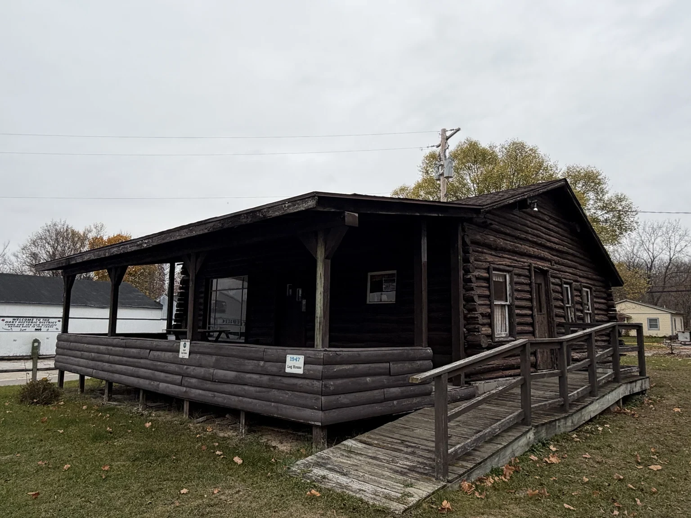
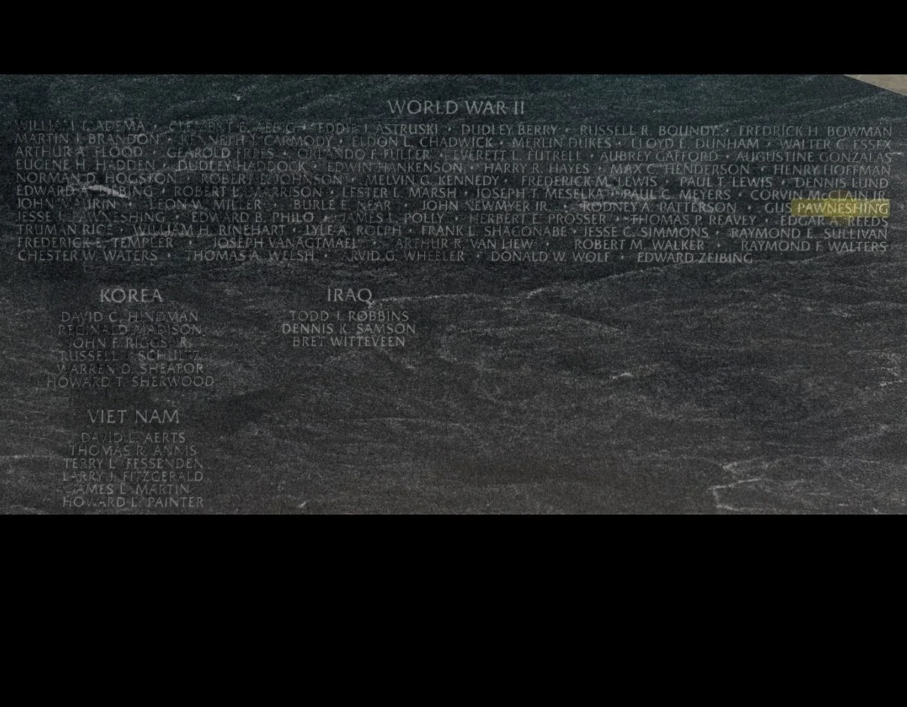
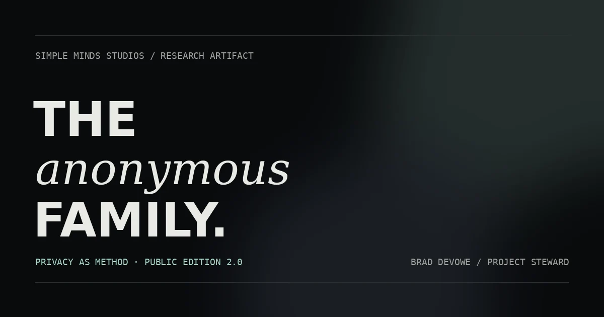
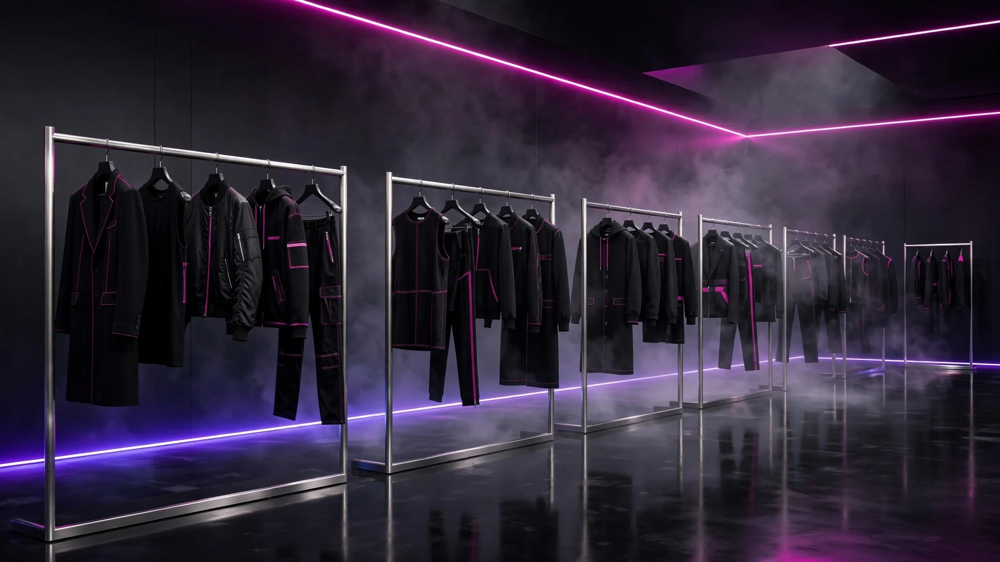
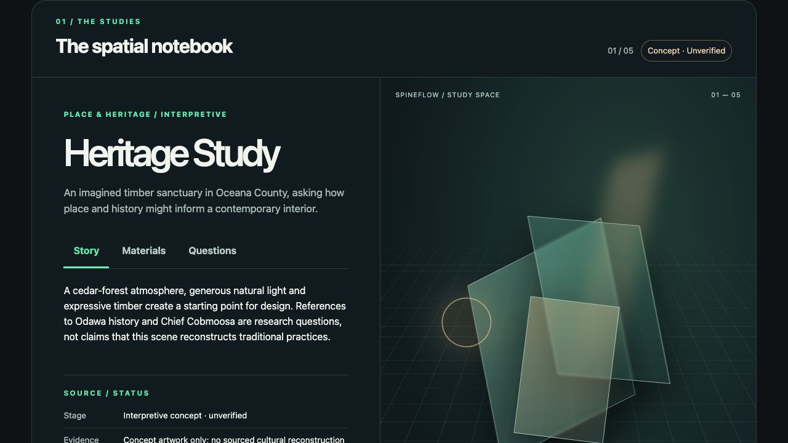
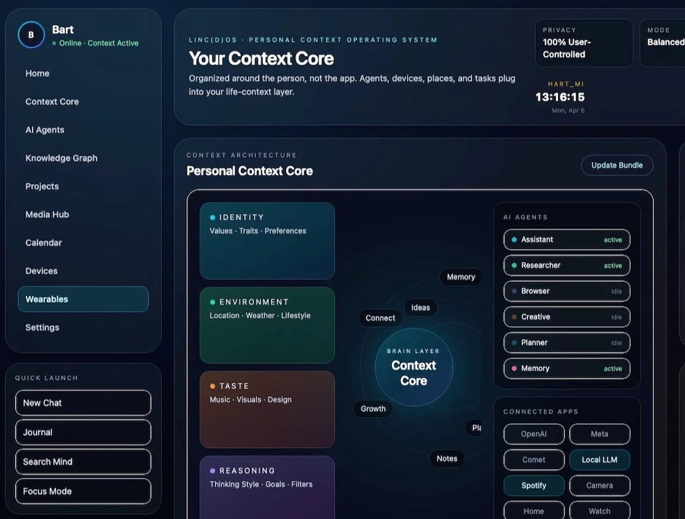

Independent studio · Hart, Michigan
A place for
questions.
Interactive exhibits, creative experiments, and research you can explore.
Find your way inMade with people. Explored with intelligent tools.

Hart, in Motion
A town. A closer look.
The public exhibition
Follow what catches you.
A few ways into the studio.
Every project has a place.

Interactive exhibitSTILL HERE
A tree of memory. A history still unfolding.

Interactive exhibitThe Anonymous Family
What we preserve. What we choose to protect.

Visual concept exhibitionLow Visibility
Fashion, atmosphere, and the space between.
LensBridge
Historical light. Future discovery.

Interactive prototypeSpineFlow Tiny
A small experiment in thinking spatially.

Interface prototypeLinc(d)
A personal context for a connected life.
There’s more to be curious about.
Open the full project directoryA conversation to take with you
Thinking Clearer
with Lincoln.
Slow things down. Stay with the question.
See what changes.
Season one · Published episodes
PerceptionMaps in the MindListenBeliefBorrowed ThoughtsListenUncertaintyThe Discipline of Not KnowingListenThe way we work
Wonder, with standards.
We follow questions across art, research, and everyday life—and distinguish evidence, interpretation, and what remains unknown.
Simple Minds Studios is our creative practice.
This is its public exhibition space.
Start a conversation
Bring the
difficult thing.
A question, a collaboration,
or something you haven’t named yet.